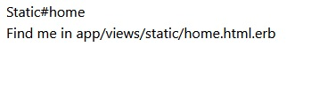
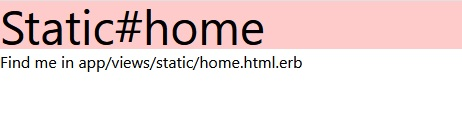

環境要求
本篇文章僅介紹如何在Rails專案裡安裝tailwindcss，請先安裝好
- Rails
- Yarn
創立專案 rails new
先來創建一個示範用的專案（名稱隨意），並cd過去
- $
rails new tailwind_css - $
cd tailwind_css
安裝Tailwind CSS v2.0
一開始我先根據官網的指令，安裝最新版的postcss和autoprefixer，但會噴出以下錯誤
Error: PostCSS plugin tailwindcss requires PostCSS 8.
因此，在下面這邊說到，可以改安裝postcss7及autoprefixer9相容的版本，輸入以下指令：
3. $yarn add tailwindcss@npm:@tailwindcss/postcss7-compat postcss@^7 autoprefixer@^9
創建config設定檔，並加入purge清除的檔案
$
npx tailwindcss init，這個指令會在根目錄創建一個tailwind.config.js的檔案，在tailwind.config.js的purge裡面新增*號檔案（※註１）
// tailwind.config.js
module.exports = {
purge: [
"./app/**/*.html.erb",
"./app/helpers/**/*.rb",
"./app/javascript/**/*.js",
"./app/javascript/**/*.vue",
],
darkMode: false, // or 'media' or 'class'
theme: {
extend: {},
},
variants: {
extend: {},
},
plugins: [],
}
引入tailwindcss
在 /app/javascript/ 資料夾下新增一個資料夾，並且在該資下夾下新增一個scss檔案（名稱隨意，我這裡資料夾取名叫tailwind，scss檔案取名叫tailwindcss.scss）
在該scss檔案新增以下三行，引入tailwindcss
// app/javascript/tailwind/tailwindcss.
@import "tailwindcss/base";
@import "tailwindcss/components";
@import "tailwindcss/utilities";
將tailwindcss引入打包檔
- 在 /app/javascript/packs/application.js 檔案裡新增一行，引入剛剛創建的scss檔案
// app/javascript/packs/application.js
import "tailwind/tailwindcss"
在postcss裡面引入tailwind
- 在根目錄裡面應該有個 postcss.config.js 檔案，新增一行require，調整後如下
// postcss.config.js
module.exports = {
plugins: [
require('tailwindcss')('tailwind.config.js'),
require('postcss-import'),
require('postcss-flexbugs-fixes'),
require('postcss-preset-env')({
autoprefixer: {
flexbox: 'no-2009'
},
stage: 3
})
]
}
調整layout
- 找到 /app/views/layouts/application.html.erb 檔案，將stylesheet後面的link改成pack
<!DOCTYPE html>
<html>
<head>
<title>TailwindCss</title>
<meta name="viewport" content="width=device-width,initial-scale=1">
<%= csrf_meta_tags %>
<%= csp_meta_tag %>
<%= stylesheet_pack_tag 'application', media: 'all', 'data-turbolinks-track': 'reload' %>
<%= javascript_pack_tag 'application', 'data-turbolinks-track': 'reload' %>
</head>
<body>
<%= yield %>
</body>
</html>
做完這10個步驟，應該就可以在你的html.erb裡面使用tailwindcss了，接下來我們新增一個頁面來確認一下
測試效果
新增頁面並設定主頁
$
rails g controller static home，新增一個名叫static的controller以及home方法在VScode按ctrl+P，搜尋「routes」，快速找到 /config/routes.rb 這個檔案，新增一個root路徑
# config/routes.rb
Rails.application.routes.draw do
get 'static/home'
root 'static#home'
end
開啟rails server及webpacker
$
bin/webpack-dev-server，開啟webpacker打包css及js檔案再開啟一個終端機，cd切換到專案的目錄（參考步驟2.，像我就是cd到tailwind_css），並輸入$
rails s
這時候應該會看到 /app/views/static/home.html.erb 這個檔案渲染出的畫面，接著我們去該檔案新增一些class

新增tailwindcss的class效果
- 修改 home.html.erb 內容
<!-- /app/views/static/home.html.erb -->
<h1 class="text-5xl bg-red-200">Static#home</h1>
<p>Find me in app/views/static/home.html.erb</p>
若沒有意外的話，應該可以看到瀏覽器的頁面會跟剛剛不一樣了

這樣就可以確認成功安裝好Tailwind囉～
補充
註釋
註１：由於tailwindcss整個套件有點龐大，而我們實作上一定不會把每一個class都使用到專案裡面。因此，透過設定purge的功能，可以將所有設定路徑的檔案過濾，然後保留有使用到的class，未使用到的就不會打包進去，可以大幅減少檔案大小，讓發布的時候可以減輕負擔，增加上傳速度。
參考資料
- TailwindCSS官方網站，左側往下拉可以找到一些class使用方式的教學
- How to install Tailwind CSS v2.0 using Ruby on Rails
轉載請註明來源。